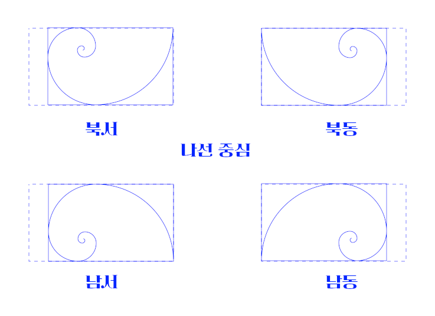

이 스크립트는 선택 영역을 감싸는 사각형 안에 "황금 나선" 을 생성합니다. 주로 사진을 자를 때 황금 나선 안내 선을 대체하기 위한 것입니다.
(역주: 황금 나선(golden spiral)은 기하학 도형 이름임. 황금 비율로 이루어진 나선. 위키백과 Golden_spiral(영문) 참조)

여기에 있는 대부분 스크립트와 달리, 이 스크립트의 메뉴 항목은 "<이미지>/선택" 메뉴(하단)에 있습니다.
황금 나선은 다음 규칙에 따라 생성됩니다.
스크립트 대화 상자를 사용하면 다음을 지정할 수 있습니다.